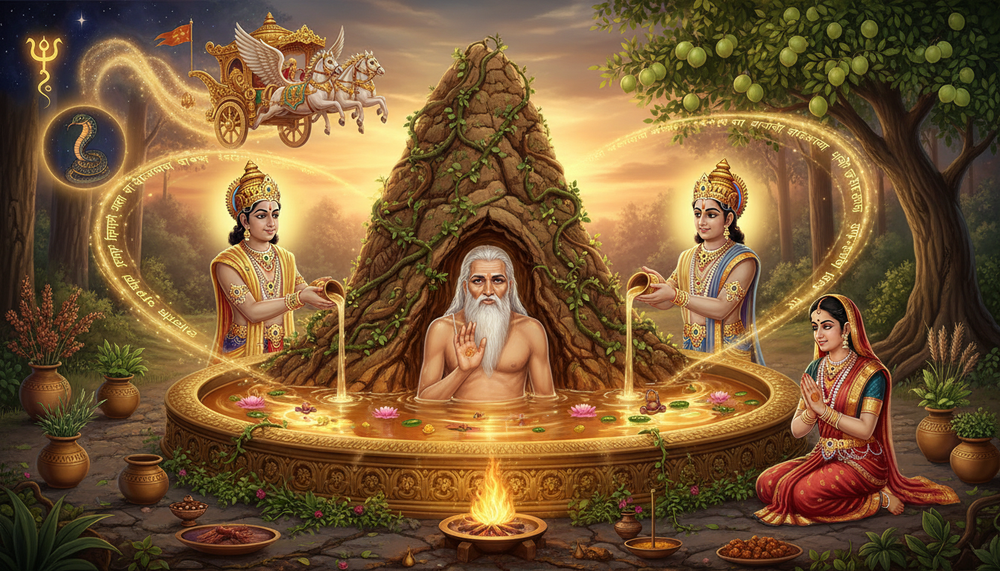

प्राचीन आर्यावर्त के वनों में, जहां ऋषि हजारों वर्षों तक तपस्या करते थे और मानव और दिव्य के बीच की सीमा भोर की कोहरे की तरह घुल जाती थी, एक ऐसे ऋषि निवास करते थे जो इतने वृद्ध हो चुके थे कि उनका शरीर एक जीवित खंडहर बन गया था। चींटियों ने उनके मांस पर अपने राज्य बसा लिए थे। लताओं ने उनके अंगों के चारों ओर कुंडली बना ली थी। उनकी त्वचा छाल बन गई थी, उनके बाल काई बन गए थे, और उनकी आंखें सदियों की धूल से बंद हो गई थीं। वे थे महर्षि च्यवन, भृगु के पुत्र, ब्रह्मा के मन से जन्मे सात प्रजापतियों में से एक। वे इतने लंबे समय तक एक ही स्थिति में ध्यान कर रहे थे कि पृथ्वी ने उन्हें ढक लिया था, और उस वन में शिकार के लिए आया एक राजा ने ऋषि को ढके हुए बांबी को एक टीला समझा और अपने रथ को उस पर चलाया, जिससे उनके पहियों की लकड़ियों ने ऋषि को भेद दिया। जब ऋषि ने हजारों वर्षों में पहली बार अपनी आंखें खोलीं, तो उनका क्रोध ब्रह्मांडीय था। लेकिन इसके बाद जो हुआ, उसने आयुर्वेद, ज्योतिष, और पुनर्युवन के अध्यात्म विज्ञान की गति को हमेशा के लिए बदल दिया।

यह कहानी है एक जीर्ण-शीर्ण, चींटियों से भरे ऋषि की, जिन्होंने औषधि के देवताओं से सौदा किया, स्वर्ग के राजा को अपना सबसे गुप्त पुनर्युवन ज्ञान साझा करने पर मजबूर किया, और एक सुनहरे जड़ी-बूटी रसायन कुंड से एक सोलह वर्षीय युवक के रूप में उभरे, दूसरे जन्म के आभा से चमकते हुए। इस परिवर्तन को पूरा करने वाला अनुष्ठान च्यवनप्राश रसायन है, दुनिया का सबसे प्राचीन दस्तावेजित अवसाद-रोधी निर्माण, जो आज भी दुनिया भर में लाखों लोगों द्वारा सेवन किया जाता है। लेकिन जाम की उस परिचित बर्तन के पीछे नक्षत्र ज्योतिष, केतु उपचारात्मक अनुष्ठान, अध्यात्म रसायन समारोह, और अश्विनी कुमारों की गुप्त तकनीक का एक छिपा हुआ ब्रह्मांड है। अश्विनी कुमार वे दिव्य चिकित्सक हैं जो अश्विनी नक्षत्र के स्वामी हैं और वैदिक परंपरा के सबसे गूढ़ चिकित्सा ज्ञान के महापुरुष हैं।
हर व्यक्ति जिसने कभी बढ़ती उम्र का भार महसूस किया है, जिसने अपनी ऊर्जा के ह्रास को देखा है, जिसने शरीर के क्षय और जीवन शक्ति के नुकसान से डरा है, उसके पास वही तकनीक है जिसका उपयोग च्यवन ने वैदिक इतिहास में दर्ज सबसे चरम शारीरिक गिरावट को उलटने के लिए किया था। च्यवनप्राश रसायन केवल एक स्वास्थ्य सप्लीमेंट नहीं है। यह एक अध्यात्म तकनीक है, एक रसायनमय तैयारी जो सूक्ष्म शरीर, ग्रह ऊर्जाओं, और भौतिक शरीर के सात धातुओं पर एक साथ काम करती है। और इसकी उत्पत्ति की कहानी आयुर्वेदिक ज्योतिष, नक्षत्र उपाय, और अध्यात्म पुनर्युवन अभ्यास का सबसे शक्तिशाली मार्गदर्शक है जो कभे मानवता को प्राप्त हुआ है।
1. च्यवन का वंश: भृगु के पुत्र और दिव्य ज्ञान की विरासत
च्यवन का जन्म महर्षि भृगु और उनकी पत्नी पुलोमा के यहां हुआ था। भृगु, जैसा कि हम भृगु संहिता की कहानी से जानते हैं, वैदिक इतिहास के सबसे शक्तिशाली ऋषियों में से एक थे, एक ब्रह्मर्षि जिसमें त्रिमूर्ति का परीक्षण करने और भगवान विष्णु की छाती पर लात मारने का साहस था। अपने पिता से, च्यवन ने न केवल ज्योतिषीय महामहिमा की भृगु वंश परंपरा को विरासत में प्राप्त किया, बल्कि सूक्ष्म शरीर, चक्रों, और उन साधनों का ज्ञान भी प्राप्त किया जिनके माध्यम से एक मानव पहुंच सकता है सिद्धियों तक, वे अलौकिक शक्तियां जो हर चेतना के भीतर सुप्त रहती हैं।
भृगु वंश शुक्र ग्रह से गहराई से जुड़ा था, जो असुरों के गुरु हैं और संजीवनी विद्या के स्वामी हैं, जो मृतकों को जीवित करने का ज्ञान है। च्यवन ऐसी परंपरा में बड़े हुए जो शरीर को केवल एक भौतिक आवरण नहीं, बल्कि एक रसायनमय प्रयोगशाला के रूप में समझती थी, जहां सात धातुओं को, रस से लेकर शुक्र तक, विशिष्ट अनुष्ठानों, जड़ी-बूटियों, और मंत्र तकनीकों के माध्यम से परिवर्तित और शुद्ध किया जा सकता था। भृगु जानते थे कि बढ़ती उम्र अनिवार्य नहीं है। यह ओजस की क्षति का परिणाम है, सात धातुओं का सर्वोत्तम सार, और ओजस को रसायन चिकित्सा के माध्यम से फिर से भरा जा सकता है, जो पुनर्युवन का वैदिक विज्ञान है।
च्यवन ने इस ज्ञान को अपने से पहले किसी भी व्यक्ति से आगे ले गए। उन्होंने हजारों वर्षों तक वन में ध्यान किया, इतनी तीव्र तपस्या की कि उनका शरीर उनके पूर्व स्वरूप का एक जीवाश्म बन गया। लेकिन साधारण तपस्वियों की तरह जो आध्यात्मिक उन्नति की कीमत के रूप में शरीर के विनाश को स्वीकार करते थे, च्यवन की एक भिन्न भावना थी। वे शरीर को छोड़ने का प्रयास नहीं कर रहे थे। वे इसे परिवर्तित करने का प्रयास कर रहे थे। वे एक ऐसी तपस्या का अभ्यास कर रहे थे जो अंततः वैदिक पौराणिक कथाओं में सबसे नाटकीय शारीरिक पुनर्युवन के कार्य में परिणत होगी।
2. बांबी और राजा: भाग्य ने ध्यान को कैसे तोड़ा
कहानी सबसे नाटकीय मोड़ पर पहुंचती है जब राजा शर्याति, इक्ष्वाकु वंश के एक वंशज, उस वन में शिकार के लिए आए जहां च्यवन ध्यान कर रहे थे। ऋषि इतने लंबे समय से स्थिर थे कि एक बांबी ने उनके शरीर को पूरी तरह से घेर लिया था। केवल आंतरिक अग्नि की एक मद्धम चमक, भीतर अभी भी जल रही तपस्या, उन्हें आसपास की पृथ्वी से अलग करती थी। राजा ने, ऋषि को न देखकर, अपने रथ को बांबी पर चलाया, और पहियों ने पपड़ी को तोड़ दिया, च्यवन के शरीर को भेद दिया।
ऋषि हजारों वर्षों की ध्यान से व्यथा और क्रोध में जागे। उन्होंने अपनी आंखें खोलीं, और उन आंखों से आध्यात्मिक अग्नि का एक किरण निकला जिसने राजा और उनकी पूरी सेना को सुन्न कर दिया। शर्याति ने, यह समझकर कि उन्होंने क्या किया, ऋषि के चरणों में गिरकर क्षमा मांगी। च्यवन ने एक शर्त पर उन्हें क्षमा करने पर सहमति व्यक्त की: राजा को अपनी पुत्री सुकन्या का विवाह उनके साथ करना होगा।
सुकन्या, असाधारण सुंदरता और बुद्धिमत्ता की एक राजकुमारी, ने एक ऐसी आत्मा के समता-भाव के साथ विवाह स्वीकार किया जो भाग्य के गहरे आयामों को समझती थी। उसने ऋषि के जीर्ण बाह्य रूप के पार स्थित चेतना को देखा। उसने बिना शिकायत, बिना पछतावे, और अपने सम्मान में सबसे छोटी कमी के बिना पूर्ण भक्ति के साथ ऋषि की सेवा करने का चुनाव किया।
उपचारात्मक ज्योतिष के दृष्टिकोण से, यह प्रसंग एक गहरा सिद्धांत प्रकट करता है। च्यवन, भृगु के पुत्र के रूप में, अपनी वंश परंपरा की शुक्र ऊर्जा वहन करते थे। लेकिन उनकी अत्यधिक तपस्या ने उस शुक्र ऊर्जा को एक दहन की स्थिति में धकेल दिया, जहां भौतिक शरीर आध्यात्मिक अग्नि द्वारा खप रहा था। राजा के रथ का पहिया वह उत्प्रेरक था जिसने ठहराव को तोड़ा। ज्योतिषीय शब्दों में, विपत्ति जो एक आपदा जैसी प्रतीत होती थी वह वास्तव में एक ग्रह गोचर के लिए उत्प्रेरक थी जो च्यवन के कुंडली को पुनः संरेखित करेगी और पुनर्युवन का द्वार खोलेगी। यह विनाशकारी गोचर का सिद्धांत है: वह घटना जो सबसे बडी दुर्भाग्य जैसी प्रतीत होती है वह कभी-कभी वह ब्रह्मांडीय तंत्र होती है जो कुंडली को उच्च स्तर पर पुनर्गठित करने के लिए बाध्य करती है।
3. अश्विनी कुमार: औषधि के देवता और उनका दिव्य रथ
कहानी अब वैदिक देवताओं में सबसे रहस्यमय और कम ज्ञात देवताओं का परिचय देती है: अश्विनी कुमार। वे सूर्य देव और उनकी पत्नी संज्ञा के जुड़वा बेटे हैं, जिन्होंने अपने पति की अतुलनीय चमक से बचने के लिए एक घोड़े का रूप लिया था। सूर्य ने एक घोड़े के रूप में उनका पीछा किया, और उनके मिलन से जुड़वा बच्चे पैदा हुए, नासत्य और दस्र, सामूहिक रूप से अश्विनी कुमार के नाम से जाने जाते हैं। उनका नाम का अर्थ "घोड़े से जन्मे" है, और वे देवताओं के चिकित्सक हैं, सभी चिकित्सा ज्ञान के स्वामी हैं, और अश्विनी नक्षत्र के अध्यक्ष देवता हैं, जो सत्ताईस चांद्र महीनों में पहला है।
अश्विनी कुमार वैदिक देवताओं में अद्वितीय हैं। वे दूरस्थ, सर्वशक्तिमान देवता नहीं हैं जो दूर से पूजा मांगते हैं। वे व्यावहारिक चिकित्सक हैं जो एक सुनहरे रथ में ब्रह्मांड की यात्रा करते हैं जो विचार से भी तेज उड़ता है, जरूरतमंदों की पुकार का जवाब देते हैं। ऋग्वेद में, उन्हें पचास से अधिक बार आह्वान किया गया है, हमेशा चिकित्सक के रूप में जो अंधों को दृष्टि, लंगड़ों को अंग, और मृतकों को जीवन लौटाते हैं। वे रसायन विद्या, पुनर्युवन के विज्ञान के संरक्षक हैं, और वे वृद्धों को यौवन लौटाने का रहस्य जानते हैं।
ज्योतिषीय शब्दों में, अश्विनी कुमार अश्विनी नक्षत्र के देवता हैं, जो मेष राशि के पहले 13 डिग्री 20 मिनट में पड़ता है। यह नक्षत्र केतु द्वारा शासित है, जो चंद्रमा का दक्षिण नोड है, जो कार्मिक अतीत, रूप के विघटन, और पदार्थ के अध्यात्मीकरण का प्रतिनिधित्व करता है। अश्विनी कुमारों और केतु के बीच का संबंध वैदिक ज्योतिष में सबसे गहरे और सबसे कम समझे जाने वाले संबंधों में से एक है। केतु मोक्ष का ग्रह है, भौतिक से मुक्ति का, लेकिन अश्विनी कुमारों के साथ इसके संबंध में, यह भौतिक शरीर को पुनर्जीवित और पुनर्युवित करने की शक्ति का भी शासन करता है। यह केतु का विरोधाभास है: यह छोड़ने का ग्रह है, लेकिन यह फीनिक्स का ग्रह भी है, जो छोड़े गए की राख से नवीनीकृत होकर उठता है।
जिनके पास केतु दोष है, या जिनके महत्वपूर्ण ग्रह अश्विनी नक्षत्र में हैं, उनके लिए अश्विनी कुमारों की पूजा प्राथमिक उपचारात्मक अभ्यास है। अश्विनी कुमार बीज मंत्र, अश्विनी नक्षत्र उपचारात्मक अनुष्ठान, और इस नक्षत्र से जुड़ी विशिष्ट जड़ी-बूटी तैयारियां वैदिक ज्योतिषीय परंपरा में सबसे शक्तिशाली और सबसे कम ज्ञात उपायों में से हैं।
4. सुकन्या और देवताओं का परीक्षण: भक्ति की परीक्षा
एक दिन, जब सुकन्या आश्रम के पास नदी में स्नान कर रही थी, अश्विनी कुमार अपने सुनहरे रथ में ऊपर से गुजरे। उन्होंने सुंदर राजकुमारी को देखा और उनकी आभा से प्रभावित हुए। लेकिन जब उन्होंने उससे बात करने के लिए नीचे उतरा, तो वे चकित रह गए यह जानकर कि वह एक ऐसे ऋषि से विवाहित थी जो इतने वृद्ध और जीर्ण थे कि वे पृथ्वी से अप्रभेद्य थे।
अश्विनी कुमारों ने सुकन्या से कहा, "तुम एक जीर्ण वृद्ध ऋषि से विवाहित होने के लिए बहुत सुंदर और बहुत युवा हो। उन्हें छोड़ दो और हम में से एक को अपना पति चुनो। हम देवताओं के चिकित्सक हैं। हम तुम्हें जो भी चाहो दे सकते हैं।"
सुकन्या ने, शुरुआत से ही दिखाए गए उसी अविचल स्थिरता के साथ, उत्तर दिया, "मैंने अपने पति का चयन किया है। मैं उन्हें नहीं छोड़ूंगी। लेकिन यदि तुम सच में पुनर्युवन के स्वामी हो, तो मेरे पति का यौवन लौटाओ। उन्हें एक युवक का शरीर लौटाओ। यही एकमात्र चीज़ है जो मैं तुमसे चाहती हूं।"
अश्विनी कुमार उसकी भक्ति से विचलित हो गए। उन्होंने च्यवन के लिए रसायन समारोह करने पर सहमति व्यक्त की, लेकिन उन्होंने एक शर्त रखी जो सभी रसायन अनुष्ठानों के लिए सांचा बन जाएगी। च्यवन को जड़ी-बूटियों और पानी से भरा एक कुंड में प्रवेश करना होगा, जो विशिष्ट नक्षत्र संरेखणों के अनुसार तैयार किया गया हो, और एक निर्दिष्ट अवधि के लिए जलमग्न रहना होगा। जब वे बाहर निकलेंगे, तो वे फिर से युवा हो जाएंगे। लेकिन एक मोड़ था। अश्विनी कुमार भी कुंड में प्रवेश करेंगे, और जब तीनों बाहर निकलेंगे, तो वे समान दिखेंगे। सुकन्या को तीन समान युवकों में से अपने पति की पहचान करनी होगी। यदि वह असफल हुई, तो पुनर्युवन उलट जाएगा।
यह परीक्षा केवल एक कथा-विधि नहीं है। यह रसायन चिकित्सा के सबसे महत्वपूर्ण सिद्धांतों में से एक को संकेतित करती है: पुनर्युवन केवल भौतिक नहीं है। यह पहचान का परिवर्तन है। रसायन से बाहर निकलने वाला व्यक्ति वही नहीं है जो अंदर गया था। वे पुनर्जन्म ले चुके हैं। और जो उनसे प्रेम करता है उसे परिवर्तित बाह्य रूप के नीचे आवश्यक स्व को पहचानने में सक्षम होना चाहिए। यह रसायन का वह अध्यात्म आयाम है जिसका आधुनिक आयुर्वेदिक अभ्यास में लगभग कभी चर्चा नहीं होती, लेकिन जो चिकित्सा की पारंपरिक समझ के लिए केंद्रीय है।
5. रसायन समारोह: रसायनमय पुनर्जन्म
अश्विनी कुमारों द्वारा च्यवन के लिए किया गया रसायन समारोह सभी रसायन अनुष्ठानों का प्रोटोटाइप है और च्यवनप्राश निर्माण की उत्पत्ति है। इस समारोह का विवरण, जैसा कि महाभारत और चरक संहिता में दर्ज है, एक परिष्कृत रसायनमय प्रक्रिया को प्रकट करता है जो भौतिक, सूक्ष्म, और कारण शरीरों पर एक साथ काम करती है।
तैयारी जड़ी-बूटियों के चयन से शुरू हुई। प्राथमिक संघटक आंवला था, भारतीय आंवला, जो विटामिन सी का सबसे संकेन्द्रित प्राकृतिक स्रोत है और आयुर्वेद में सर्वोत्तम रसायन जड़ी-बूटी है। आंवला बुध ग्रह से जुड़ा है और कहा जाता है कि इसमें आयुर्वेद द्वारा मान्यता प्राप्त छह स्वादों (रसों) में से पांच का सार है, केवल नमकीन स्वाद को छोड़कर। बुध के साथ इसका संबंध महत्वपूर्ण है क्योंकि बुध बुद्धि, संचार, और तंत्रिका तंत्र का शासन करता है, जो सभी उम्र के साथ गिरावट आते हैं। आंवला को आधार के रूप में उपयोग करके, रसायन केवल भौतिक शरीर को नहीं, बल्कि बढ़ती उम्र के संज्ञानात्मक और तंत्रिका संबंधी आयामों को भी लक्षित करता है।
अन्य जड़ी-बूटियों में शामिल थे:
- हरीतकी, terminalia chebula, शनि (Shani) से जुड़ी, जो बृहदांत्र और विषाक्त पदार्थों के उन्मूलन का शासन करती है। हरीतकी तिब्बती चिकित्सा में जड़ी-बूटियों की राजा है और कहा जाता है कि यह त्रिदोष के सभी असंतुलनों को दूर करती है।
- बिभीतकी, terminalia bellirica, सूर्य (Surya) से जुड़ी, जो फेफड़ों और श्वसन तंत्र का शासन करती है।
- गुडूची, tinospora cordifolia, चंद्र (Chandra) से जुड़ी, जो आयुर्वेद में सर्वोत्तम प्रतिरक्षा-तंत्र संशोधक है और अमृत कहलाती है, अमरता का अमृत, क्योंकि इसकी पूरे तंत्र को पुनर्युवित करने की क्षमता के कारण।
- शतावरी, asparagus racemosus, शुक्र (Shukra) से जुड़ी, जो प्रजनन ऊतक (शुक्र धातु) को पोषित करती है और सर्वोत्तम स्त्री रसायन है।
- अश्वगंधा, withania somnifera, मंगल (Mangal) से जुड़ी, जो मांसपेशी ऊतक (मांस धातु) और तंत्रिका तंत्र का पुनर्निर्माण करती है और सर्वोत्तम पुरुष रसायन है।
- बला, sida cordifolia, गुरु (Guru) से जुड़ी, जो हड्डियों और संयोजी ऊतक को मजबूत करती है।
- पिप्पली, piper longum, सूर्य से जुड़ी, जो अन्य सभी जड़ी-बूटियों की जैव-उपलब्धता को बढ़ाती है और उनके रसायन प्रभाव को परवर्तित करती है।
- विदंग, embelia ribes, केतु से जुड़ी, जो शरीर से परजीवी और विषाक्त पदार्थों को निकालती है और विशेष रूप से अश्विनी नक्षत्र से जुड़ी है।
- ब्राह्मी, bacopa monnieri, बुध से जुड़ी, जो मस्तिष्क और संज्ञानात्मक कार्यों को पुनर्युवित करती है।
- शंखपुष्पी, convolvulus pluricaulis, चंद्र से जुड़ी, जो मन को शांत करती है और स्मृति को बढ़ाती है।
- मुस्ता, cyperus rotundus, मंगल से जुड़ी, जो पाचन अग्नि को संतुलित करती है।
- एला, इलायची, शुक्र से जुड़ी, जो हृदय और भावनाओं को सामंजस्य देती है।
- त्वक, दालचीनी, सूर्य से जुड़ी, जो परिसंचरण को गरम करती है।
- पत्र, तेज पत्ता, गुरु से जुड़ी, जो यकृत का समर्थन करती है।
- नागकेशर, mesua ferrea, शनि से जुड़ी, जो रक्त का समर्थन करती है।
- लवंग, laung, मंगल से जुड़ी, जो तंत्रिकाओं का समर्थन करती है।
इन जड़ी-बूटियों को घी (स्पष्ट मक्खन), तिल के तेल, शक्कर, शहद, और परिमाणित मात्रा में पानी के साथ मिलाया गया। तैयारी एक विशिष्ट नक्षत्र संरेखण के दौरान की गई। समय महत्वपूर्ण था: जड़ी-बूटियों की कटाई और तैयारी तब शुरू होनी चाहिए जब चंद्रमा अश्विनी नक्षत्र में हो, जिससे अश्विनी कुमारों की चिकित्सा शक्ति परवर्तित हो। घी और तेल को गरम किया गया जबकि विशिष्ट मंत्रों का जाप किया गया, तैयारी को अश्विनी कुमारों की कंपन ऊर्जा और प्रत्येक जड़ी-बूटी से जुड़ी ग्रह ऊर्जाओं से भर दिया।
6. जलमग्नता: यौवन के कुंड में मृत्यु और पुनर्जन्म
अश्विनी कुमारों ने एक बड़ा कुंड, जिसे कुंडा कहा जाता है, तैयार किया और उसे जड़ी-बूटी तैयारी से भर दिया। उन्होंने ऋग्वेद से अश्विनी सूक्त, मानव इतिहास का सबसे प्राचीन चिकित्सा मंत्र, का जाप किया, जबकि जड़ी-बूटियां पानी में घुल गईं, एक सुनहरा तरल बनाते हुए जो आंतरिक प्रकाश से चमकता था। कुंडा को मुख्य दिशाओं के साथ संरेखित किया गया, और इसका प्रवेश द्वार पूर्व की ओर था, उगते सूर्य और सूर्य देव, अश्विनी कुमारों के पिता, की दिशा।
च्यवन और दोनों अश्विनी कुमार कुंड में एक साथ प्रवेश कर गए। जैसे ही उन्होंने जड़ी-बूटी रसायनमय स्नान में जलमग्न होकर, तीनों के भौतिक शरीर तरल में घुल गए। कुंड में जो रह गया वह तीन शरीर नहीं थे, बल्कि चेतना का एक एकीकृत क्षेत्र था, एक ऐसी स्थिति जहां ऋषि और देवताओं की व्यक्तिगत पहचान एक एकल चिकित्सा उपस्थिति में विलीन हो गई। यह रसायन चिकित्सा का सबसे गहरा रहस्य है: पुनर्युवन केवल जड़ी-बूटियों द्वारा पूरा नहीं होता। यह व्यक्तिगत चेतना का दिव्य चिकित्सा चेतना के साथ विलय द्वारा पूरा होता है, जड़ी-बूटियों और मंत्रों द्वारा मध्यस्थता किए गए। जड़ी-बूटियां भौतिक आधार हैं। मंत्र कंपन कुंजी हैं। चेतना परिवर्तन का वास्तविक कारण है।
निर्धारित अवधि के बाद, तीन समान युवक कुंड से बाहर निकले। प्रत्येक आभामय था, प्रत्येक सोलह वर्ष का था, प्रत्येक रूप और आकृति में सिद्ध था। च्यवन का पुराना, चींटियों से भरा शरीर चला गया। उसकी जगह एक ऐसी सत्ता खड़ी थी जो वैदिक जड़ी-बूटि विज्ञान, नक्षत्र ज्योतिष, और दिव्य हस्तक्षेप के रसायनमय विलय के माध्यम से भौतिक रूप से पुनर्जन्म ले चुका था।
7. सुकन्या की पहचान: सत्य दृष्टि का अध्यात्म परीक्षण
जब तीन युवक सुकन्या के सामने खड़े हुए, तो उसका सामना उस परीक्षा से था जो पूरे रसायन समारोह की सफलता या विफलता का निर्धारण करेगी। अश्विनी कुमारों ने कहा था कि उसे अपने पति की पहचान करनी होगी। यदि उसने गलत चुना, तो पुनर्युवन उलट जाएगा और च्यवन अपनी जीर्ण स्थिति में लौट जाएंगे।
सुकन्या ने तीन समान रूपों को देखा। भौतिक आंखों के दृष्टिकोण से, वे अप्रभेद्य थे। एक ही चेहरा, एक ही शरीर, एक ही आभा। लेकिन सुकन्या ने वर्षों तक अपने पति की ऐसी भक्ति से सेवा की थी जो केवल पत्नी की नहीं, बल्कि आध्यात्मिक थी। उसने बांबी के बाह्य रूप के पार स्थित चेतना को देखा था। उसने शरीर की आंखों से नहीं, बल्कि आत्मा की आंखों से देखना सीखा था।
अध्यात्म परंपरा में, इसे सूक्ष्म शरीर की दृष्टि कहा जाता है। भौतिक रूप की नकल की जा सकती है, लेकिन सूक्ष्म शरीर, सूक्ष्म शरीर, व्यक्तिगत आत्मा के अद्वितीय हस्ताक्षर को वहन करता है, इसके कार्मिक पैटर्न, इसकी चेतना आवृत्ति। सुकन्या ने, अपने वर्षों की भक्तिपूर्ण सेवा के माध्यम से, अपनी चेतना को च्यवन के सूक्ष्म शरीर की आवृत्ति पर अंशांकित कर लिया था। वह उनकी उपस्थिति को उसी तरह महसूस कर सकती थी जैसे एक ट्यूनिंग फोर्क कंपन करता है जब इसकी मेल खाती आवृत्ति पास में बजती है।
वह पहले रूप के पास से गुजरी। वह दूसरे के पास से गुजरी। जब वह तीसरे तक पहुंची, तो उसने रुकी। सूक्ष्म कंपन असंदिग्ध था। यह उनके पति थे। शरीर नहीं, जो समान था, बल्कि चेतना जो इसमें निवास करती थी, च्यवन की आत्मा की अद्वितीय आवृत्ति, जिसे कोई भी भौतिक परिवर्तन बदल नहीं सकता।
उसने तीसरे का चयन किया। और वह सही थी।
अश्विनी कुमार, अभूतपूर्व रूप से प्रभावित, ने च्यवन और सुकन्या को आशीर्वाद दिया और अपने सुनहरे रथ में प्रस्थान किया। च्यवन, अब युवा और आभामय, अपनी पत्नी के साथ अपने आश्रम में लौटे और हजारों वर्षों तक और जीवे, एक ऐसे शरीर में अपनी तपस्या जारी रखी जो फिर कभी क्षय नहीं होगा।
8. च्यवनप्राश: दुनिया का पहला अवसाद-रोधी सूत्र
रसायन समारोह में प्रयुक्त जड़ी-बूटियों और ज्ञान से, च्यवन ने उस नुस्खे को तैयार किया जो च्यवनप्राश के नाम से जाना जाएगा। उन्होंने इसे राजा शर्याति के साथ और उनके माध्यम से समस्त मानवता के साथ साझा किया। यह सूत्र, चरक संहिता, आयुर्वेद के मूल ग्रंथ में दर्ज है, तीन हजार वर्षों से अधिक समय से निरंतर तैयार और सेवन किया जा रहा है और आज भी दुनिया में सबसे व्यापक रूप से उपयोग की जाने वाली आयुर्वेदिक तैयारियों में से एक है।
च्यवनप्राश की पारंपरिक तैयारी उन्हीं सिद्धांतों का अनुसरण करती है जो मूल रसायन समारोह का संचालन करते थे:
- समय: तैयारी उस दिन शुरू होनी चाहिए जब चंद्रमा अश्विनी नक्षत्र में हो, या मकर संक्रांति पर, जिस दिन सूर्य मकर राशि में प्रवेश करता है, जो उत्तरायण की शुरुआत का प्रतीक है, बढ़ती सौर ऊर्जा का छह महीने का काल जिसे आयुर्वेद में रसायन चिकित्सा के लिए सबसे शुभ समय माना जाता है।
- जड़ी-बूटियां: लगभग चालीस जड़ी-बूटियों का उपयोग किया जाता है, आंवला को आधार के रूप में। ताजे आंवला फलों की कटाई उनके मौसम के दौरान की जानी चाहिए, जो सर्दियों के महीनों के साथ मेल खाता है जब विटामिन सी सामग्री सबसे अधिक होती है।
- वसा माध्यम: घी और तिल के तेल का उपयोग वसा माध्यम के रूप में किया जाता है, जो जड़ी-बूटियों के वसा-घुलनशील घटकों को शरीर के गहरे ऊतकों में ले जाता है।
- मीठा आधार: शक्कर और शहद का उपयोग मीठे आधार के रूप में किया जाता है, जो तैयारी को संरक्षित करता है और तत्काल ऊर्जा प्रदान करता है जो रसायन प्रक्रिया के लिए आवश्यक है।
- मंत्र: पारंपरिक तैयारी में, अश्विनी सूक्त और मृत्युंजय मंत्र का पकाने की प्रक्रिया के दौरान जाप किया जाता है, तैयारी को चिकित्सा कंपन से भर देते हुए। यह अभ्यास आधुनिक वाणिज्यिक तैयारी में लगभग पूरी तरह से लुप्त हो गया है, लेकिन पूर्ण रसायन प्रभाव के लिए आवश्यक है।
- मसाले: पिप्पली, इलायची, दालचीनी, और लौंग जैसे गरम मसाले पकाने की प्रक्रिया के अंत में जैव-उपलब्धता को बढ़ाने और आधार के भारी, मीठे स्वभाव को संतुलित करने के लिए जोड़े जाते हैं।
च्यवनप्राश का दैनिक सेवन, सुबह खाली पेट गर्म दूध या पानी के साथ लिया जाता है, यौवन, ऊर्जा, और प्रतिरक्षा के रखरखाव के लिए सर्वोत्तम रसायन माना जाता है। लेकिन पूर्ण लाभ तभी प्राप्त होता है जब सेवन के साथ विशिष्ट अभ्यास किए जाते हैं जो सूत्र में अंतर्निहित नक्षत्र और ग्रह ऊर्जाओं को सक्रिय करते हैं।
9. अश्विनी नक्षत्र उपाय: केतु संबंध
अश्विनी नक्षत्र, अश्विनी कुमारों द्वारा शासित और केतु द्वारा नियंत्रित, चिकित्सा और पुनर्युवन उपायों के लिए सबसे शक्तिशाली नक्षत्र है। जिनके पास अश्विनी नक्षत्र में चंद्रमा, लग्न, या महत्वपूर्ण ग्रह हैं, उनका चिकित्सा कलाओं और रसायन परंपरा से एक प्राकृतिक संबंध है, लेकिन वे केतु की विघटन और परिवर्तन ऊर्जा भी वहन करते हैं, जो रहस्यमय स्वास्थ्य समस्याओं के रूप में प्रकट हो सकता है जिनका निदान पारंपरिक चिकित्सा नहीं कर सकती।
अश्विनी नक्षत्र के लिए उपचारात्मक अभ्यासों में शामिल हैं:
- अश्विनी कुमार पूजा: रविवार को, जो सूर्य देव (अश्विनी कुमारों के पिता) के पवित्र हैं, अश्विनी कुमारों की मूर्तियों या प्रतिमाओं को लाल फूल, घी के दीपक, और ताजा पानी अर्पित करें। ऋग्वेद से अश्विनी सूक्त का जाप करें, जो वैदिक परंपरा में सबसे प्राचीन चिकित्सा मंत्र है।
- अश्विनी नक्षत्र बीज मंत्र: अश्विनी नक्षत्र के लिए बीज मंत्र "ॐ ऐम् अश्विनेभ्यो नमः" है। इस मंत्र का जाप दैनिक 108 बार किया जाना चाहिए, अधिमानतः भोर को जब अश्विनी ऊर्जा सबसे मजबूत हो।
- केतु उपाय: चूंकि केतु अश्विनी नक्षत्र का शासन करता है, इस नक्षत्र में ग्रहों वालों के लिए केतु उपाय आवश्यक हैं। प्राथमिक केतु उपायों में शामिल हैं: भगवान गणेश की पूजा (केतु के अध्यक्ष देवता), मंगलवार को बहुरंगी फूल और दालों का अर्पण, केतु बीज मंत्र "ॐ स्रां स्रीं स्रौं सः केतवे नमः" का 108 बार जाप, द्विवर्ण कुत्ते का दान या आवारा कुत्तों को भोजन (केतु का वाहन कुत्ता है), और चांसी आई (लहसुनिया) रत्न चांदी में दाहिने हाथ की मध्य उंगली में पहनना।
- अश्विनी नक्षत्र होम: अश्विनी कुमारों को समर्पित एक अग्नि समारोह उस दिन किया जाना चाहिए जब चंद्रमा अश्विनी नक्षत्र से गुजरता है। होम में नक्षत्र से जुड़ी विशिष्ट जड़ी-बूटियों का उपयोग होता है, जिसमें आंवला की टहनियां, गुडूची के तने, और अश्वगंधा की जड़ें शामिल हैं, अश्विनी सूक्त के जाप के साथ अग्नि में अर्पित की जाती हैं।
- नक्षत्र देवता साधना: अश्विनी कुमारों को समर्पित एक एकलपन्नालीश दिन की साधना, उस अवधि के दौरान की जाती है जब चंद्रमा प्रत्येक माह अश्विनी नक्षत्र से गुजरता है। साधना में अश्विनी कुमार प्रतिमा या प्रतीक का आंवला रस, गुडूची काढ़ा, और हल्दी से युक्त पानी से दैनिक अभिषेक, उसके बाद 108 बार अश्विनी कुमार मंत्र का जाप, और नक्षत्र की जड़ी-बूटियों से तैयार हल्के भोजन का अर्पण शामिल है।
10. रसायन का अध्यात्म आयाम: भौतिक शरीर के पार
अश्विनी कुमारों से च्यवन को प्राप्त रसायन चिकित्सा उन स्तरों पर काम करती है जिन्हें आधुनिक आयुर्वेद शायद ही स्वीकार करता है। पारंपरिक वैदिक समझ में, रसायन केवल एक भौतिक पुनर्युवन चिकित्सा नहीं है। यह एक अध्यात्म अभ्यास है जो सूक्ष्म ऊर्जाओं, ग्रह शक्तियों, और चेतना के हेरफेर के माध्यम से सात धातुओं, शरीर के सात ऊतक स्तरों को परिवर्तित करता है।
सात धातुएं और उनके ग्रह संबंध हैं:
| धातु | ऊतक | ग्रह | रस | जड़ी-बूटी |
|---|---|---|---|---|
| रस | प्लाज्मा | चंद्र | मीठा | आंवला |
| रक्त | रक्त | सूर्य | खट्टा | मंजिष्ठा |
| मांस | मांसपेशी | मंगल | नमकीन | अश्वगंधा |
| मेद | वसा | गुरु | तीखा | गुग्गुलु |
| अस्थि | हड्डी | शनि | कड़वा | बला |
| मज्जा | मज्जा | बुध | कषाय | ब्राह्मी |
| शुक्र | प्रजनन | शुक्र | मीठा | शतावरी |
रसायन प्रक्रिया ऊपर से नीचे की ओर काम करती है, पहले रस को भरती है और फिर क्रमिक रूप से प्रत्येक अगली धातु को पोषित करती है जब तक कि शुक्र शुद्ध नहीं हो जाता और ओजस, आठवीं और सर्वोत्तम धातु, उत्पन्न नहीं हो जाता। ओजस सात धातुओं का सार है, वह सूक्ष्म पदार्थ जो प्रतिरक्षा, ऊर्जा, आध्यात्मिक शक्ति, और स्वास्थ्य के उस आभा का शासन करता है जिसे हम यौवन की आभा के रूप में पहचानते हैं। जब ओजस क्षीण होता है, तो बढ़ती उम्र त्वरित होती है। जब ओजस भरा जाता है, तो शरीर पुनर्युवित होता है।
रसायन का अध्यात्म आयाम उन चक्रों को सक्रिय करना शामिल करता है जो प्रत्येक धातु से संबंधित हैं। मूलाधार (मूल चक्र) अस्थि धातु (हड्डी) का शासन करता है, स्वाधिष्ठान (सैक्रल चक्र) शुक्र धातु (प्रजनन) का शासन करता है, मणिपुर (सौर जाल) मेद धातु (वसा) का शासन करता है, अनाहत (हृदय चक्र) रक्त धातु (रक्त) का शासन करता है, विशुद्ध (गला चक्र) रस धातु (प्लाज्मा) का शासन करता है, और आज्ञा (तीसरी आंख) मज्जा धातु (मज्जा) का शासन करता है। रसायन समारोह इन चक्रों को एक विशिष्ट क्रम में सक्रिय करता है, जड़ी-बूटियों, मंत्रों, और अभ्यासी की चेतना का उपयोग करके प्रत्येक चक्र को खोलता है और उस चक्र से संबंधित ग्रह ऊर्जा को संबंधित धातु में प्रवाहित करने की अनुमति देता है।
यही कारण है कि रसायन समारोह के लिए एक महापुरुष की उपस्थिति आवश्यक है, ऐसा कोई जैसे अश्विनी कुमार, जो सूक्ष्म शरीर को देख सकता है और ग्रह ऊर्जाओं को सही चैनलों में निर्देशित कर सकता है। इस मार्गदर्शन के बिना, जड़ी-बूटियां अकेले भौतिक शरीर को पोषित कर सकती हैं लेकिन उस पूर्ण परिवर्तन को पूरा नहीं कर सकतीं जो सच्चे रसायन का गठन करता है।
11. अश्विनी सूक्त: सबसे प्राचीन चिकित्सा मंत्र
अश्विनी सूक्त, ऋग्वेद के पहले मंडल (RV 1.3) में पाया जाता है, वैदिक परंपरा में सबसे प्राचीन चिकित्सा मंत्र है और रसायन समारोह का प्राथमिक मंत्र है। यह अश्विनी कुमारों को उनके वैदिक नामों, नासत्य और दस्र, द्वारा आह्वान करता है और उनके चिकित्सा कार्यों का वर्णन सजीव, काव्यात्मक भाषा में करता है जो गहरी अध्यात्म तकनीक को संकेतित करती है।
अश्विनी सूक्त का प्रारंभिक श्लोक कहता है: "अश्विना सुक्रदश्विना कृष्णास्विना स्वर्य चक्रथु शुभस्पत्ना धियम्।"
इसका अनुवाद लगभग है: "हे अश्विन, प्रकाश और अंधकार के स्वामी, आकाश के यात्री, दिव्य बुद्धि के लाते, हमारे पास अपनी चिकित्सा शक्ति के साथ आओ।"
लेकिन अध्यात्म अर्थ और गहरा है। जुड़वा देवता सृष्टि और विघटन की द्वैत शक्तियों का प्रतिनिधित्व करते हैं, ब्रह्मांड के अंतःश्वास और निःश्वास, दो नाड़ियां (इडा और पिंगला) जो सूक्ष्म शरीर में केंद्रीय सुषुम्ना नाड़ी के दोनों ओर स्थित हैं। जब अश्विनी कुमारों का आह्वान किया जाता है, तो वे इडा और पिंगला नाड़ियों को एक साथ सक्रिय करते हैं, एक संतुलन बनाते हैं जो सुषुम्ना को खोलता है और कुंडलिनी ऊर्जा को ऊपर उठने की अनुमति देता है। यह रसायन का वास्तविक तंत्र है: सुषुम्ना के माध्यम से कुंडलिनी का आरोह, प्रत्येक चक्र और प्रत्येक धातु को पोषित करते हुए जैसे-जैसे यह ऊपर उठता है, जब तक कि यह सहस्रार (क्राउन चक्र) तक नहीं पहुंचता और पूरे तंत्र को ओजस, अमरता के अमृत से भर नहीं देता।
अश्विनी सूक्त का जाप पूर्ण चिकित्सा प्रभाव के लिए मूल संस्कृत में, सही उच्चारण और लय के साथ किया जाना चाहिए। जो पूर्ण सूक्त का जाप नहीं कर सकते, उनके लिए सार छोटे मंत्र में है: "ॐ अश्विनेभ्यो नमः," जिसका जाप दैनिक 108 बार एक रसायन अभ्यास के रूप में किया जा सकता है। मंत्र का जाप भोर को, पूर्व की ओर मुख करके, एक गिलास गर्म पानी में एक चम्मच च्यवनप्राश घोलकर पीने के बाद किया जाना चाहिए। भौतिक रसायन (च्यवनप्राश) और कंपन रसायन (मंत्र) का यह संयोजन वह दैनिक अभ्यास है जिसका अनुसरण कहा जाता है कि च्यवन ने स्वयं अपने पुनर्युवन के बाद किया था।
12. केतु और फीनिक्स सिद्धांत: विघटन से पुनर्जन्म
केतु और अश्विनी कुमारों के बीच का संबंध वैदिक ज्योतिष में सबसे गहरे और सबसे कम समझे जाने वाले सिद्धांतों में से एक को प्रकट करता है: फीनिक्स सिद्धांत। केतु विघटन का ग्रह है, छोड़ने का, रूप का आत्मा में विघटन का। लेकिन अश्विनी नक्षत्र और अश्विनी कुमारों के साथ इसके संबंध में, केतु विघटन से पुनर्जन्म की शक्ति का भी शासन करता है। जैसे फीनिक्स अपनी ही राख से उठता है, केतु ऊर्जा, जब ठीक से चैनल की जाती है, पुराने को भंग कर सकती है और नए को पुनर्जीवित कर सकती है।
यह च्यवन के पुनर्युवन के पीछे का ज्योतिषीय रहस्य है। च्यवन, भृगु के पुत्र के रूप में, शुक्र और संजीवनी विद्या से गहराई से जुड़े थे। लेकिन उनका पुनर्युवन शुक्र के माध्यम से पूरा नहीं हुआ। यह केतु के माध्यम से, अश्विनी कुमारों के माध्यम से, जड़ी-बूटी कुंड में पुराने शरीर के विघटन और नए के पुनर्जन्म के माध्यम से पूरा हुआ। शुक्र ऊर्जा संरक्षित और बनाए रखती है। केतु ऊर्जा भंग और पुनर्जीवित करती है। सच्चे पुनर्युवन के लिए, दोनों की आवश्यकता है। पुराने को भंग किए बिना नया नहीं जन्म सकता।
जिनके पास केतु दोष है, उनके लिए यह समझ केतु उपायों के प्रति पूरे दृष्टिकोण को बदल देती है। केतु को शांत करने या इसके प्रभावों को शमित करने का प्रयास करने के बजाय, अभ्यासी केतु के साथ काम कर सकता है ताकि उस विघटन को पूरा कर सके जो पुनर्जन्म से पहले आता है। उपाय रक्षात्मक उपाय नहीं बल्कि दीक्षा-मय अभ्यास बन जाते हैं जो केतु ऊर्जा का उपयोग उसे भंग करने के लिए करते हैं जिसे भंग करने की आवश्यकता है और उसे पुनर्जीवित करने के लिए जिसे पुनर्जीवित करने की आवश्यकता है।
इस सिद्धांत के व्यावहारिक अनुप्रयोग में शामिल हैं:
- केतु दशा उपाय: केतु महादशा या अंतर्दशा के दौरान, केवल इस अवधि से बचने का प्रयास करने के बजाय, केतु ऊर्जा का उपयोग पुराने पैटर्न, पुराने लगाव, और पुरानी भौतिक स्थितियों के जानबूझकर विघटन के लिए करें। इस अवधि के दौरान रसायन चिकित्सा का अभ्यास करें, क्योंकि केतु ऊर्जा जड़ी-बूटियों और मंत्रों की पुनर्जनन शक्ति को परवर्तित करेगी।
- केतु गोचर उपाय: जब केतु जन्म कुंडली के किसी महत्वपूर्ण भाव या ग्रह से गुजरता है, तो अश्विनी नक्षत्र उपाय और ऊपर वर्णित रसायन अभ्यास करें। गोचर गहरे परिवर्तन के अवसर की एक खिड़की बनाता है जिसे भय और प्रतिरोध पर बर्बाद नहीं किया जाना चाहिए।
- आठवें भाव में केतु: जिनके आठवें भाव में केतु है उनमें एक प्राकृतिक रसायन क्षमता है, क्योंकि आठवां भाव परिवर्तन, दीर्घायु, और अध्यात्म का शासन करता है। इन व्यक्तियों को जीवन भर रसायन चिकित्सा का अभ्यास करना चाहिए, क्योंकि उनका च्यवन आदर्श और अश्विनी कुमार ऊर्जा से एक कार्मिक संबंध है।
13. ग्रह गोचर 2026: कुंभ में केतु और रसायन समय
वर्ष 2026 में कुंभ राशि (Kumbha) से केतु का एक महत्वपूर्ण गोचर है, जो 2025 के अंत में शुरू होता है और 2026 तक जारी रहता है। यह गोचर रसायन चिकित्सा के लिए एक शक्तिशाली खिड़की बनाता है, क्योंकि कुंभ में केतु वायु तत्व, तंत्रिका तंत्र, और सूक्ष्म शरीर को सक्रिय करता है, जो सभी रसायन के प्राथमिक लक्ष्य हैं।
कुंभ में केतु मेष राशि (Mesha) पर भी दृष्टि डालता है, जो अश्विनी नक्षत्र वाली राशि है, गोचर केतु और अश्विनी कुमारों के नक्षत्र के बीच एक प्रत्यक्ष ऊर्जावान संबंध बनाते हुए। यह संरेखण अश्विनी नक्षत्र उपायों की चिकित्सा और पुनर्युवन शक्ति को परवर्तित करता है और 2026 को रसायन अभ्यास के लिए एक असाधारण रूप से शक्तिशाली वर्ष बनाता है।
कुंभ में केतु गोचर के लिए उपचारात्मक अभ्यासों में शामिल हैं:
- च्यवनप्राश सेवन: गोचर की शुरुआत पर एक दैनिक च्यवनप्राश आहार-विधा शुरू करें, सुबह गर्म दूध के साथ लें। च्यवनप्राश का आंवला आधार बुध ऊर्जा से अनुनाद करता है जो कुंभ में केतु द्वारा उत्पन्न भ्रम और दिशा-भ्रम का प्रतिकार करता है।
- अश्विनी कुमार मंत्र: पूरे गोचर के दौरान दैनिक अश्विनी कुमार बीज मंत्र "ॐ ऐम् अश्विनेभ्यो नमः" का 108 बार जाप करें, अधिमानतः भोर को। मंत्र अभ्यासी को अश्विनी कुमारों की चिकित्सा आवृत्ति के साथ संरेखित करता है और गोचर ऊर्जा का उपयोग विघटन के बजाय पुनर्युवन के लिए करता है।
- केतु होम: केतु के कुंभ में प्रवेश के दिन एक केतु होम प्रायोजित करें, अग्नि समारोह में केतु-संबंधित जड़ी-बूटियों (अश्वगंधा, विदंग, और बला) का उपयोग करें। होम एक अध्यात्म फायरवॉल बनाता है जो अभ्यासी को गोचर के नकारात्मक प्रभावों से बचाता है जबकि सकारात्मक, पुनर्जनन प्रभावों को परवर्तित करता है।
- नक्षत्र उपवास: जिस दिन प्रत्येक माह चंद्रमा अश्विनी नक्षत्र से गुजरता है, सूर्योदय से सूर्यास्त तक उपवास रखें, केवल पानी और च्यवनप्राश का सेवन करें। यह अभ्यास अभ्यासी की चांद्र ऊर्जा को अश्विनी कुमार ऊर्जा के साथ संरेखित करता है और पुनर्युवन का एक मासिक चक्र बनाता है जो गोचर के दौरान बनता है।
- दान और सेवा: केतु उन्हें पुरस्कृत करता है जो बीमारों और दुखियों की सेवा करते हैं। गोचर के दौरान, एक अस्पताल, वृद्धाश्रम, या आयुर्वेदिक चिकित्सालय में स्वयंसेवा करें। जरूरतमंदों को आयुर्वेदिक दवाइयां दान करें। यह चिकित्सा सेवा का कार्य सबसे शक्तिशाली केतु उपाय है, क्योंकि यह अभ्यासी को दिव्य चिकित्सा की अश्विनी कुमार ऊर्जा के साथ सीधे संरेखित करता है।
14. च्यवन यज्ञ: पुनर्युवन के लिए अग्नि अनुष्ठान
च्यवन यज्ञ एक अग्नि समारोह है जो मूल रसायन समारोह को एक ऐसे अनुष्ठान रूप में प्रतिकृत करता है जो गृहस्थों के लिए सुलभ है। इसे च्यवन ने स्वयं अपने पुनर्युवन के बाद विकसित किया और यजुर्वेद में दीर्घायु और ऊर्जा के लिए प्राथमिक अनुष्ठान के रूप में वर्णित है।
यज्ञ उस दिन किया जाता है जब चंद्रमा अश्विनी नक्षत्र में हो, आदर्श रूप से उत्तरायण काल (जनवरी मध्य से जुलाई मध्य) के दौरान। अनुष्ठान के लिए आवश्यक है:
- कुंड: एक वर्गाकार या अष्टकोणीय अग्नि गर्त, मुख्य दिशाओं के साथ संरेखित, इसका प्रवेश द्वार पूर्व की ओर।
- ईंधन: आम की लकड़ी, आंवला की लकड़ी, और गुग्गुलु राल को अग्नि के ईंधन के रूप में। ये लकड़ियां क्रमशः गुरु, बुध, और केतु की ग्रह ऊर्जाओं को वहन करती हैं।
- अर्पण: घी में आंवला चूर्ण, हरीतकी चूर्ण, और अश्वगंधा चूर्ण मिलाकर, अश्विनी सूक्त के प्रत्येक पाठ के साथ अग्नि में अर्पित किया जाता है।
- मंत्र: ऋग्वेद 1.3 से अश्विनी सूक्त, घी-जड़ी-बूटी मिश्रण के अर्पण के दौरान 108 बार जाप किया जाता है। प्रत्येक श्लोक के साथ अग्नि में एक अर्पण होता है।
- अवधि: यज्ञ लगभग तीन घंटे तक चलती है, सूर्योदय से दोपहर तक।
- प्रसाद: यज्ञ के अंत में, शेष घी-जड़ी-बूटी मिश्रण को प्रतिभागियों में प्रसाद के रूप में वितरित किया जाता है, वह आशीर्वादित भोजन जो अनुष्ठान की चिकित्सा ऊर्जा वहन करता है।
च्यवन यज्ञ उनके लिए विशेष रूप से प्रभावी है जो पुरानी स्वास्थ्य समस्याओं, समय से पहले बढ़ती उम्र, या केतु दोष का सामना कर रहे हैं जो भौतिक गिरावट के रूप में प्रकट हो रहा है। अग्नि जड़ी-बूटियों को एक सूक्ष्म, ऊर्जावान रूप में परिवर्तित करती है जो सबसे गहरे स्तर पर धातुओं को सीधे पोषित कर सकती है, पाचन तंत्र को बायपास करते हुए अग्नि तत्व के माध्यम से सूक्ष्म शरीर में प्रवेश करती है, जो परिवर्तन का तत्व है।
15. अश्विनी कुमार कवच: देवताओं की सुरक्षात्मक ढाल
अश्विनी कुमार कवच एक सुरक्षात्मक ढाल मंत्र है जो अश्विनी कुमारों का आह्वान अभ्यासी के चारों ओर चिकित्सा ऊर्जा के क्षेत्र से घेरने के लिए करता है। यह वैदिक परंपरा में सबसे कम ज्ञात कवच मंत्रों में से एक है और विशेष रूप से रोग, बढ़ती उम्र, और केतु के नकारात्मक प्रभावों के विरुद्ध सुरक्षा के लिए उपयोग किया जाता है।
कवच का दृश्यीकरण इस प्रकार है: अभ्यासी ध्यान में बैठता है और अश्विनी कुमारों को शरीर के दोनों ओर खड़े देखता है, उनका सुनहरा रथ सिर के ऊपर, उनके चिकित्सक हाथ कंधों पर टिके। जुड़वा देवता सुनहरे प्रकाश की एक ढाल बनाते हैं जो अभ्यासी को पूरी तरह से घेरती है, पैर के तलवों से सिर के मुकुट तक। इस ढाल के भीतर, अभ्यासी सात धातुओं को अश्विनी कुमारों की जड़ी-बूटी ऊर्जा द्वारा पोषित होते देखता है, आधार पर रस से मुकुट पर ओजस तक।
कवच का मंत्र है: "ॐ नमस्ते अश्विनेभ्यो देव वैद्याभ्यां च सर्वदा। रक्षामां सर्वदा भद्भ्यां रोगाद् भयाद् अशुभाद् अपि।"
इसका अनुवाद है: "अश्विनों को नमस्कार, दिव्य चिकित्सकों को, सदा। मेरी रक्षा करो सदा, हे दोनों, रोग, भय, और अशुभ से।"
कवच का जाप सुबह 108 बार किया जाना चाहिए, दैनिक च्यवनप्राश सेवन के बाद और अश्विनी कुमार बीज मंत्र से पहले। च्यवनप्राश (भौतिक रसायन), कवच (सुरक्षात्मक ढाल), और बीज मंत्र (कंपन संरेखण) का यह संयोजन वह संपूर्ण दैनिक रसायन अभ्यास है जो च्यवन ने अश्विनी कुमारों से प्राप्त किया और मानवता को सौंपा।
16. दीर्घायु का आयुर्वेद: रसायन आठवीं चिकित्सा शाखा के रूप में
शास्त्रीय आयुर्वेदिक परंपरा में, चिकित्सा अभ्यास की आठ शाखाएं (अष्टांग आयुर्वेद) हैं। आठवीं और सर्वोत्तम शाखा रसायन तंत्र है, पुनर्युवन और दीर्घायु का विज्ञान। इसे सबसे उच्च शाखा माना जाता है क्योंकि यह केवल रोग का उपचार नहीं करती, बल्कि शरीर, मन, और आत्मा को उनकी अधिकतम क्षमता तक अनुकूलित करती है। यह वह शाखा है जो च्यवन और अश्विनी कुमारों की विरासत का सबसे प्रत्यक्ष रूप से उत्तराधिकारी है।
रसायन तंत्र के सिद्धांतों में शामिल हैं:
- आचार रसायन: व्यावहारिक रसायन, जिसमें नैतिक और आध्यात्मिक सिद्धांतों के अनुसार जीवन शामिल है। सत्यता, अहिंसा, करुणा, संतोष, और भक्ति को रसायन अभ्यास माना जाता है क्योंकि वे ओजस को संरक्षित करते हैं और मानसिक और भावनात्मक विक्षोभों को रोकते हैं जो जीवन शक्ति को क्षीण करते हैं।
- आहार रसायन: आहार-संबंधी रसायन, जिसमें ऐसे खाद्य पदार्थों का सेवन शामिल है जो धातुओं को पोषित करते हैं और ओजस को संरक्षित करते हैं। प्राथमिक आहार रसायन खाद्य पदार्थ दूध, घी, शहद, आंवला, खजूर, बादाम, और च्यवनप्राश निर्माण स्वयं हैं।
- विष रसायन: विष-विज्ञान संबंधी रसायन, जिसमें प्रतिरक्षा तंत्र को उत्तेजित करने और प्रतिरोध बनाने के लिए विष (विष) की नियंत्रित मात्रा का उपयोग शामिल है। यह रसायन की सबसे अध्यात्म और सबसे कम ज्ञात शाखाओं में से एक है, जिसका अभ्यास नाथ योगियों और अघोरियों द्वारा किया जाता है, जो सांप के जहर, पारा, और अन्य विषाक्त पदार्थों की छोटी मात्रा का रसायन एजेंट के रूप में सेवन करते हैं। सिद्धांत टीकाकरण के समान है: विनाशकारी शक्ति की एक नियंत्रित मात्रा शरीर की पुनर्जनन प्रतिक्रिया को ट्रिगर करती है, प्रतिरक्षा और ऊर्जा की एक उच्च स्थिति उत्पन्न करती है।
- रस शास्त्र: रसायनमय रसायन, जिसमें रसायन एजेंट के रूप में शुद्ध धातुओं और खनिजों (पारद/पारा, अभ्रक/माइका, स्वर्ण/सोना, रजत/चांदी, ताम्र/तांबा, लौह/लोहा) का उपयोग शामिल है। यह रसायन की सबसे उन्नत और संभावित रूप से खतरनाक शाखा है, जिसमें धातुओं को मानव सेवन के लिए सुरक्षित बनाने के लिए वर्षों के शुद्धिकरण और प्रसंस्करण की आवश्यकता होती है। रस शास्त्र परंपरा का दावा है कि ठीक से संसाधित पारा अमरता प्रदान कर सकता है, एक दावा जो सीधे च्यवन की कहानी और भृगु वंश की संजीवनी विद्या से जुड़ता है।
- मेध्य रसायन: संज्ञानात्मक रसायन, जिसमें ऐसी जड़ी-बूटियां और अभ्यास शामिल हैं जो मस्तिष्क और संज्ञानात्मक कार्यों को पुनर्युवित करते हैं। प्राथमिक मेध्य रसायन जड़ी-बूटियां ब्राह्मी, मंडूकपर्णी, शंखपुष्पी, और ज्योतिष्मती हैं। ये जड़ी-बूटियां उनके लिए विशेष रूप से प्रभावी हैं जो संज्ञानात्मक गिरावट, स्मृति हानि, या केतु दोष के मानसिक प्रभावों का अनुभव कर रहे हैं।
17. व्यावहारिक साधना: आज च्यवन रसायन कैसे शुरू करें
च्यवन की कहानी अतीत की कहानी नहीं है। यह एक जीवंत परंपरा है, एक व्यावहारिक तकनीक जो किसी के लिए भी उपलब्ध है जो बढ़ती उम्र की प्रक्रिया को उलटना, अपनी ऊर्जा को बहाल करना, और अश्विनी कुमारों की चिकित्सा ऊर्जा के साथ संरेखित करना चाहता है। च्यवन रसायन साधना शुरू करने का एक व्यावहारिक मार्गदर्शक निम्नलिखित है।
सुबह का अभ्यास (भोर)
- सूर्योदय से पहले जागें। एक गिलास गर्म पानी में एक चम्मच च्यवनप्राश घोलकर पिएं। यह भौतिक रसायन है, उसी सूत्र की दैनिक मात्रा जिसका उपयोग अश्विनी कुमारों ने च्यवन को पुनर्युवित करने के लिए किया था।
- स्नान करें, अधिमानतः ऐसे पानी से जो रात भर तांबे के बर्तन में रखा गया हो। तांबा शुक्र का धातु है, और पानी में शुक्र ऊर्जा शुक्र धातु, ओजस की नींव का समर्थन करती है।
- पूर्व की ओर मुख करके बैठें। अश्विनी कुमार कवच का 108 बार जाप करें, जुड़वा देवताओं की सुनहरी ढाल का दृश्यीकरण करते हुए जो आपके शरीर के चारों ओर है।
- अश्विनी कुमार बीज मंत्र "ॐ ऐम् अश्विनेभ्यो नमः" का 108 बार जाप करें, अश्विनी कुमारों की चिकित्सा ऊर्जा का दृश्यीकरण करते हुए जो सात धातुओं में से प्रत्येक में प्रवाहित हो रही है, रस से शुक्र तक।
- ऋग्वेद से अश्विनी सूक्त का जाप करें, यदि आपने इसे सीखा है, या बस दस मिनट तक मौन में बैठें, अश्विनी कुमारों की उपस्थिति और मंत्रों के कंपन को महसूस करते हुए जो आपके शरीर को व्याप्त कर रहे हैं।
आहार अभ्यास
- रसायन-अनुकूल आहार सेवन करें: गर्म, ताजा पका हुआ भोजन जिसमें दूध, घी, साबुत अनाज, बादाम, खजूर, आंवला, और मौसमी सब्जियां प्रमुख हों।
- ठंडा भोजन, बासी भोजन, प्रसंस्कृत भोजन, अत्यधिक कैफीन, और शराब से बचें, क्योंकि ये ओजस को क्षीण करते हैं और बढ़ती उम्र को त्वरित करते हैं।
- शाम को, रात के खाने से एक घंटा पहले, गर्म दूध के साथ च्यवनप्राश की दूसरी मात्रा लें।
साप्ताहिक अभ्यास
- रविवार को (सूर्य देव, अश्विनी कुमारों के पिता का दिन), आंवला रस और हल्दी से युक्त पानी से अश्विनी कुमार प्रतिमा या प्रतीक का अभिषेक करें।
- जिस दिन प्रत्येक माह चंद्रमा अश्विनी नक्षत्र से गुजरता है, एक रसायन उपवास रखें: सूर्यास्त तक केवल च्यवनप्राश और दूध के साथ गर्म पानी पिएं, फिर हल्के, गर्म भोजन से उपवास तोड़ें।
मौसमी अभ्यास
- मकर संक्रांति (जनवरी मध्य) पर अपनी च्यवनप्राश आहार-विधा शुरू करें या नवीनीकृत करें, उत्तरायण की शुरुआत, जब सौर ऊर्जा बढ़ना शुरू होती है और रसायन प्रभाव सबसे मजबूत होता है।
- मकर संक्रांति के निकटतम अश्विनी नक्षत्र गोचर के दिन च्यवन यज्ञ प्रायोजित करें या भाग लें।
दीर्घकालिक अभ्यास
- जिनके पास केतु दोष या अश्विनी नक्षत्र में महत्वपूर्ण ग्रह हैं, उनके लिए एक एकलपन्नालीश दिन की अश्विनी नक्षत्र साधना पर विचार करें: दैनिक च्यवनप्राश, दैनिक कवच और बीज मंत्र जाप, साप्ताहिक अभिषेक, और प्रति माह एक नक्षत्र उपवास, 40 दिनों तक।
- जो पुरानी स्वास्थ्य समस्याओं या समय से पहले बढ़ती उम्र का सामना कर रहे हैं, उनके लिए च्यवन यज्ञ प्रायोजित करें और एक आयुर्वेदिक चिकित्सक के मार्गदर्शन में एक निरंतर रसायन आहार-विधा शुरू करें जो रसायन चिकित्सा के नक्षत्र और ग्रह आयामों को समझता हो।
18. शाश्वत सबक: बढ़ती उम्र एक परिवर्तन है, गिरावट नहीं
च्यवन की कहानी वैदिक आयुर्वेद और उपचारात्मक ज्योतिष में सबसे महत्वपूर्ण सबक सिखाती है: बढ़ती उम्र एक अनिवार्य गिरावट नहीं है। यह एक परिवर्तन है जिसे रसायन चिकित्सा, नक्षत्र उपाय, और अश्विनी कुमारों की कृपा के उचित अनुप्रयोग के माध्यम से निर्देशित, त्वरित, उलटा, और पार किया जा सकता है।
च्यवन ने अपनी वृद्धावस्था से केवल बच नहीं गए। उन्होंने इसका उपयोग वैदिक इतिहास में सबसे नाटकीय पुनर्युवन के लिए कच्ची सामग्री के रूप में किया। उनका जीर्ण, चींटियों से भरा शरीर एक त्रासदी नहीं था। यह रसायन के लिए आवश्यक पूर्व-शर्त था, पुराना रूप जिसे नए रूप के जन्म से पहले भंग करना पड़ता था। और अश्विनी कुमार, औषधि के देवता, ने उन्हें केवल चंगा नहीं किया। उन्होंने उन्हें शरीर के रहस्य में दीक्षित किया, वह रहस्य कि शरीर एक स्थिर वस्तु नहीं बल्कि एक प्रवाहमान प्रक्रिया है, धातुओं की एक नदी जिसे सही जड़ी-बूटियों, सही मंत्रों, और सही चेतना के माध्यम से पुनर्निर्देशित और शुद्ध किया जा सकता है।
हर व्यक्ति जो च्यवनप्राश सेवन करता है, जो अश्विनी सूक्त का जाप करता है, जो च्यवन यज्ञ करता है, जो अश्विनी कुमारों का उनके शक्ति के दिन सम्मान करता है, च्यवन के मार्ग पर चल रहा है। वे केवल एक स्वास्थ्य सप्लीमेंट नहीं ले रहे हैं। वे उसी अध्यात्म तकनीक में संलग्न हैं जिसने वैदिक इतिहास में सबसे चरम शारीरिक गिरावट को उलट दिया। रसायन की शक्ति हजारों वर्षों में कम नहीं हुई। अश्विनी कुमारों की कृपा फीकी नहीं पड़ी। पुनर्युवन की संभावना समाप्त नहीं हुई।
च्यवन ने हमें दिखाया कि सबसे वृद्ध, सबसे जीर्ण, सबसे निराशाजनक शरीर को भी रसायन चिकित्सा, नक्षत्र संरेखण, और दिव्य कृपा की शक्ति के माध्यम से परिवर्तित किया जा सकता है। उन्होंने हमें दिखाया कि च्यवनप्राश केवल जाम का एक बर्तन नहीं, बल्कि जड़ी-बूटी रूप में संकेतित एक अध्यात्म तकनीक है। और उन्होंने हमें दिखाया कि जब एक मानव अश्विनी कुमारों की चिकित्सा शक्ति के प्रति समर्पित होता है, तो औषधि के देवता अपने सुनहरे रथ और अपने प्राचीन चिकित्सा मंत्रों के साथ प्रकट होते हैं ताकि जो खोया है उसे बहाल करें और जो क्षय हुआ है उसे नवीनीकृत करें।
अश्विनी कुमार हमेशा सवारी कर रहे हैं। उनका रथ हमेशा गति में है। उनके चिकित्सक हाथ हमेशा बढ़े हुए हैं। वे पुकार की प्रतीक्षा करते हैं। वे भक्ति की प्रतीक्षा करते हैं। वे उसकी प्रतीक्षा करते हैं जो, सुकन्या की तरह, क्षय के पार स्थित चेतना को देखता है और कहता है, "उन्हें बहाल करो। उन्हें पूर्ण करो। यही एकमात्र चीज़ है जो मैं चाहता हूं।"
अश्विनी कुमारों की कृपा उन सभी की रक्षा करे जो ये शब्द पढ़ते हैं, जो च्यवनप्राश सेवन करते हैं, जो अश्विनी सूक्त का जाप करते हैं, और जो शुद्ध हृदय से रसायन के मार्ग पर चलते हैं। बढ़ती उम्र की प्रक्रिया बढ़ती ऊर्जा, ज्ञान, और आध्यात्मिक शक्ति की यात्रा में परिवर्तित हो। और च्यवनप्राश रसायन आपके शरीर में गूंजे, अभी और हमेशा, सभी क्षय, सभी गिरावट, और सभी ह्रास के लिए सर्वोत्तम उपाय के रूप में।
ॐ अश्विनेभ्यो नमः।
Sources
- Chyavana - Wikipedia
- Ashvins - Wikipedia
- Chyavanaprasha - Wikipedia
- Charaka Samhita - Rasayana Adhyaya
- Mahabharata - Chyavana and Sukanya Story
- Rig Veda 1.3 - Ashwini Sukta
- Ashwini Nakshatra - Vedic Astrology
- Ketu Remedies in Vedic Astrology
- Ketu Beej Mantra and Worship
- Amalaki - Ayurvedic Rasayana Herb
- Ashwagandha - Rasayana for Strength
- Brahmi - Medhya Rasayana
- Shankhpushpi - Calming Herb
- Shatavari - Female Rasayana
- Guduchi - Amrita Rasayana
- Haritaki - King of Herbs
- Bala - Rasayana for Bones
- Pippali - Bioavailability Enhancer
- Rasayana Tantra - Eighth Branch of Ayurveda
- Ojas and Immunity in Ayurveda
- Seven Dhatus in Ayurveda
- Cat Eye Gemstone - Lehsunia for Ketu
- Ketu Transit 2026 Remedies
- Ashwini Kumar Worship and Rituals
- Nakshatra Devata Sadhana
- Rasa Shastra - Alchemical Ayurveda
- Medhya Rasayana - Cognitive Rejuvenation
- Chyavana Yajna - Fire Ritual
- Makar Sankranti and Rasayana Timing
- Bhrigu Lineage and Sanjeevani Vidya
- Ketu in Eighth House - Astrological Significance
- Ashwini Nakshatra Homa Ceremony
- Achara Rasayana - Behavioral Rejuvenation
- Visha Rasayana - Toxicological Rejuvenation
- Kundalini and Sushumna Nadi
- Sukanya Story - Devotion and Recognition
- Ganesha Worship for Ketu
- Ashwini Kumar Kavach Mantra
- Ayurveda and Planetary Correspondences
- Rasayana and Longevity in Vedic Tradition